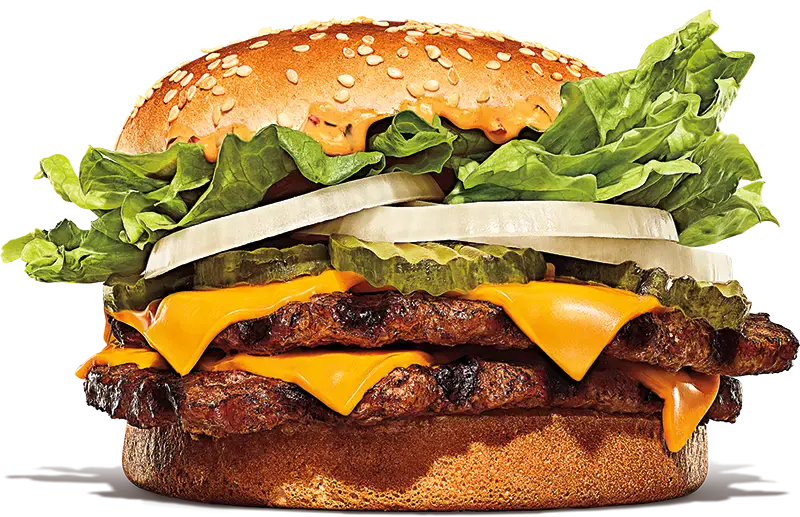

How to make a burger :)

Ingredients
- 1 small onion, diced
- 500g good-quality beef mince
- 1 egg
- 1 tbsp vegetable oil
- 4 burger buns
- All or any of the following to serve: sliced tomato, beetroot, horseradish sauce, mayonnaise, ketchup, handful iceberg lettuce, rocket, watercress
Recipe
STEP 1
- Tip 500g beef mince into a bowl with 1 small diced onion and 1 egg, then mix.
STEP 2
- Divide the mixture into four. Lightly wet your hands. Carefully roll the mixture into balls, each about the size of a tennis ball.
STEP 3
- Set in the palm of your hand and gently squeeze down to flatten into patties about 3cm thick. Make sure all the burgers are the same thickness so that they will cook evenly.
STEP 4
- Put on a plate, cover with cling film and leave in the fridge to firm up for at least 30 mins.
STEP 5
- Heat the barbecue to medium hot (there will be white ash over the red hot coals – about 40 mins after lighting). Lightly brush one side of each burger with vegetable oil.
STEP 6
- Place the burgers, oil-side down, on the barbecue. Cook for 5 mins until the meat is lightly charred. Don’t move them around or they may stick.
STEP 7
- Oil the other side, then turn over using tongs. Don’t press down on the meat, as that will squeeze out the juices.
STEP 8
- Cook for 5 mins more for medium. If you like your burgers pink in the middle, cook 1 min less each side. For well done, cook 1 min more.
STEP 9
- Take the burgers off the barbecue. Leave to rest on a plate so that all the juices can settle inside.
STEP 10
- Slice four burger buns in half. Place, cut-side down, on the barbecue rack and toast for 1 min until they are lightly charred. Place a burger inside each bun, then top with your choice of accompaniment.